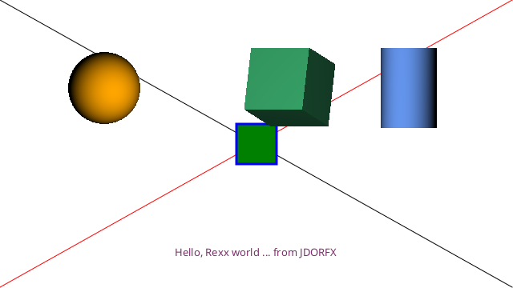

JDORFX (JavaFX drawing for ooRexx) is a Rexx command handler implemented in Java using BSF4ooRexx850. It makes JavaFX immediate-mode 2D drawing and retained scene-graph functionality, including 3D shapes, cameras, lights, materials, images, and animation, available through Rexx commands.
Example "jdorfx_synopsis_sample.rxj":
#!/usr/bin/env rexx call addJdorFXHandler useRedirection? = .false if useRedirection? then address jdorfx with output using (.stdout) error using (.stderr) else address jdorfx width = 640 height = 360 newImage width height winTitle "JDORFX Synopsis" -- Draw two lines forming a big X drawLine (width - 1) (height - 1) color red moveTo (width - 1) 0 position say "--> rc="pp(rc) drawLine 0 (height - 1) len = 50 moveTo (width - len) / 2 (height - len) / 2 color green fillRect len len stroke str3 3 color blue drawRect len len color somePurple 0.498 0.180 0.435 1.0 color say "--> rc="pp(rc) say " rc~toString:" pp(rc~toString) moveTo 218 320 drawString "Hello, Rexx world ... from JDORFX" -- Static JavaFX 3D scene-graph objects shape3d ball sphere 130 110 0 45 shape3d cube box 320 105 0 80 80 80 shape3d column cylinder 510 110 0 35 100 rotate3dshape cube 25 320 105 0 0 1 0 rotate3dshape cube (-15) 320 105 0 1 0 0 fill3dshape ball fill3dshape cube fill3dshape column material ballMaterial orange material cubeMaterial mediumseagreen material columnMaterial cornflowerblue setMaterial ball ballMaterial setMaterial cube cubeMaterial setMaterial column columnMaterial winShow say "Press Enter to close." if useRedirection? then sleep 5 else pull . winClose ::requires "../samples/jdorfx.cls"
The program prints output like the following (the Java object identity may vary):
--> rc=[639 0]
--> rc=[javafx.scene.paint.Color@4501b7af]
rc~toString: [0x7f2e6fff]
It displays this JavaFX window:

The JDORFX Rexx command handler exposes two complementary JavaFX drawing models:
GraphicsContext attached to a Canvas. Commands such as
drawLine, fillRect, and drawString change
pixels on that canvas.Shape, Shape3D, camera, and light nodes. These objects
remain addressable and can be transformed, assigned materials, and animated.JDORFX preserves much of the command interface of
JDOR,
but implements it with JavaFX rather than Java AWT/Java2D. One compatibility
convention is the current position: moveTo x y stores a
position in the handler, and immediate-mode commands such as
drawRect width height and drawString text draw from that
stored position. Their command signatures therefore omit the leading
x and y parameters found in the corresponding JavaFX
GraphicsContext methods.
The principal differences from JDOR are the JavaFX object types and rendering
model. JDOR draws through Java2D and uses AWT objects such as
Graphics2D, Color, and BufferedImage. JDORFX
draws its immediate-mode content through JavaFX Canvas and
GraphicsContext, and adds retained nodes, 3D, cameras, lights,
Phong materials, and JavaFX animation. Image-query and clipboard commands
convert results to BufferedImage only where JDOR compatibility
requires Java interoperation.
Hint: using the redirection option of the Rexx ADDRESS keyword instruction (i.e., its WITH subkeyword with the redirection definitions) has the following effects:
ADDRESS JDORFX WITH input using (stemOrStreamOrArray) /* activate input redirection */Note: you need to supply at least one command (e.g. a comment command like
"-- some comment") to the command handler
such that it gets invoked and becomes able to note that input is redirected, such
that it takes the commands from the redirected input.
KeyValue[]
expression cannot be reconstructed automatically.
ADDRESS JDORFX WITH output using (.output) /* activate output redirection */
ADDRESS JDORFX WITH error using (.error) /* activate error redirection */In addition ooRexx will communicate the result of executing a command by setting the environment symbol .RS (value 0 indicates successful completion, -1 indicates a failure and 1 indicates an error).
ADDRESS JDORFX /* all unqualified commands should go to this handler */
The ADDRESS keyword instruction is documented in the ooRexx reference book (rexxref.pdf) in "Chapter 2. Keyword Instructions", section "2.1 ADDRESS").
The following related material may be helpful:
- (dash),
; (semi colon),
/ (slash),
" (double quote),
' (single quote),
. (dot),
: (colon),
! (exclamation mark),
? (question mark),
_ (underscore). Therefore it is sufficient to prefix a command with one
of these characters in order to turn it into "comment command".
In general the arguments to a command are blank delimited. If supplying a Rexx variable, its referred to value will be supplied, if using a Rexx expression it will be evaluated and the resulting value will be supplied to the Rexx command handler.
If you wish to supply the name of a Rexx variable to a command (e.g. for the commands drawPolygon, drawPolyline, fillPolygon or getState) then make sure to enquote that variable name as otherwise its value gets supplied instead.
Commands need not be enquoted, unless their names collide with Rexx keyword names (which at the time of writing does not happen) or are used as Rexx variable names in your program.
Unquoted literals will be uppercased according to the Rexx rules and then supplied to the command handler. If commands or arguments are unquoted then they get uppercased as well and blanks between them will be reduced to a single blank according to the Rexx rules before supplying the resulting command with arguments to the Rexx command handler.
Hint: in general any command that allows for querying and setting a value will return the current value and in the case of setting it to a new value will return the old (previously current) value.
Compatibility note: the handler recognizes the following inherited
JDOR command names but does not implement them: clip,
clipRemove, composite, copyArea,
draw3DRect, fill3DRect, gradientPaint,
imageType, paint, pathIterator,
popGC, preferredImageType, pushGC,
noOp,
render, setPaintMode, and setXorMode.
Calling one raises FAILURE -101 with the message
unimplemented command. Their inherited rows below describe the
JDOR interface for comparison, not available JDORFX behavior.
winShow, winHide, winClose,
winLocation, winSize, winScreenSize,
winTitle, winVisible, winResizable,
winFrame, winAlwaysOnTop,
winAlwaysOnTopSupported, winToBack,
winToFront, winUpdate, sleep, and
assignRC.newImage, GC, getState,
reset, color, background,
stroke, font, fontSize,
fontStyle, moveTo, drawLine,
drawString, stringBounds,
drawPolyline, drawPolygon, fillPolygon,
drawOval, fillOval, drawRect,
fillRect, clearRect, drawRoundRect,
fillRoundRect, drawArc, fillArc,
rotate, scale, shear,
translate, and transform.loadImage, drawImage, saveImage,
image, imageCopy, imageSize,
clipboardGet (alias getClipboard),
clipboardSet (alias setClipboard),
clipboardSetWithoutAlpha (alias setClipboardWithoutAlpha), pushImage,
popImage, printScaleToPage,
printScale, printPos, and printImage.shape, drawShape, fillShape,
clipShape, shapeBounds, areaAdd,
areaExclusiveOr, areaIntersect,
areaSubtract, areaTransform,
pathAppend, pathClone, pathClose,
pathCurrentPoint, pathCurveTo,
pathLineTo, pathMoveTo, pathQuadTo,
pathReset, pathTransform, and
pathWindingRule.shape3D, draw3DShape, fill3DShape,
rotate3DShape, scale3DShape,
shear3DShape, translate3DShape,
cullFace, camera, setCamera,
translateCamera, rotateCamera,
cameraNearClip, cameraFarClip, light,
setLight, translatePointLight, map,
material, materialColor, materialMap,
and setMaterial.animationFade, animationRotate,
animationScale, animationTranslate,
animationPath, animationFill,
animationStroke, animationPauseTransition,
animationSequential, animationParallel,
setInterpolator, animationPlay,
animationPause, animationStop,
animationStatus, timeline, keyValue,
and keyframe.Window and application control:
| Command | Argument(s) | Description / result in RC | |
|---|---|---|---|
| winShow | Shows the JavaFX stage. RC has no result. | ||
| winHide | Hides the stage without closing it. RC has no result. | ||
| winClose | Closes the stage. RC has no result. | ||
| winLocation Alias: winMoveTo | [x y] | Queries or sets the stage position. A query returns x y; setting returns the previous position. | |
| winSize | [width height] | Queries or sets the canvas/window size. A query returns width height; setting returns the previous size. | |
| winScreenSize | Returns the screen width and height as width height. | ||
| winTitle | [title] | Queries or sets the title. The complete remainder is the title; setting returns the previous title. | |
| winVisible | [boolean] | Queries or sets visibility and returns the current/previous value as 1 or 0. | |
| winResizable | [boolean] | Queries or sets resizability and returns the current/previous value as 1 or 0. | |
| winFrame | [boolean] | Queries or sets stage decoration and returns the current/previous value as 1 or 0. Changing decoration rebuilds the stage. | |
| winAlwaysOnTop | [boolean] | Queries or sets always-on-top state and returns the current/previous value. | |
| winAlwaysOnTopSupported | Despite its name, the current handler returns the current always-on-top state; it does not test platform support. | ||
| winToBack | Requests that the stage move behind other windows. RC has no result. | ||
| winToFront | Requests that the stage move in front of other windows. RC has no result. | ||
| winUpdate | [boolean] | Queries or controls automatic stage updates. A query returns 1 or 0; setting has no result. | |
| sleep | seconds | Pauses the Rexx command thread for the supplied possibly fractional number of seconds. RC has no result. | |
| assignRC | RexxVariable | Assigns the current RC value to a valid Rexx variable name. RC is not otherwise replaced. |
Canvas, state, colour, stroke, and text:
| Command | Argument(s) | Description / result in RC | |
|---|---|---|---|
| newImage Alias: new | [width height [depthBuffer]] | Creates a new JavaFX canvas and scene; defaults to 500 by 500 and a false depth buffer. RC has no result. | |
| GC | Returns the current JavaFX GraphicsContext. | ||
| getState | [variableName] | Returns an ooRexx StringTable containing current state, registries, image stack, and print settings; optionally assigns it to the named Rexx variable. | |
| reset Alias: clear | Clears registries and stacks and restores defaults. RC has no result. | ||
| color Alias: colour | [name [red green blue [alpha]]] | Queries, selects, or defines the common fill and stroke colour. Decimal components use normalized JavaFX values; integer components use values from 0 through 255. Querying or setting returns the current/previous JavaFX colour. | |
| background | [colorName] | Queries or sets the scene background and returns the current/previous JavaFX paint. | |
| stroke | [name [width [cap join [miterLimit [dashArray dashOffset]]]]] | Queries, selects, or defines line settings and returns the previous settings. Defaults: width 1, SQUARE cap, MITER join, miter limit 10, no dashes, offset 0. | |
| font | [name [family]] | Queries the current font, selects a registered/Rexx-variable font, or creates a font using current size and style. Returns the previous JavaFX font; the family is the complete remainder. | |
| fontSize | [size] | Queries or sets the positive integer font size and returns the previous size. The new size is used when a font is next created. | |
| fontStyle | [PLAIN|BOLD|ITALIC|BOLDITALIC] | Queries or sets style; numeric values 0–3 are accepted. | |
| moveTo Aliases: goto, location, pos, position | [x y] | Queries or sets the current position. A query returns currX currY; setting returns the previous position. | |
| drawLine | toX toY | Strokes from the current position to the target without changing the current position. RC has no result. | |
| drawString | text | Draws the complete remaining text at the current position. RC has no result. | |
| stringBounds | text | Returns minX minY width height for the complete remaining text in the current font. | |
| drawPolyline | xPoints yPoints nPoints | Strokes connected segments. Point lists may be inline parenthesized arrays such as (1,2,3) or named Rexx Java int[] variables. | |
| drawPolygon | xPoints yPoints nPoints | Strokes a closed polygon. Use inline parenthesized arrays as described for drawPolyline. | |
| fillPolygon | xPoints yPoints nPoints | Fills a closed polygon. Use inline parenthesized arrays as described for drawPolyline. | |
| drawOval | width height | Strokes an oval in the current-position bounding box. | |
| fillOval | width height | Fills an oval in the current-position bounding box. | |
| drawRect | width height | Strokes a rectangle at the current position. | |
| fillRect | width height | Fills a rectangle at the current position. | |
| clearRect | width height | Clears a rectangle to transparent pixels at the current position. | |
| drawRoundRect | width height arcWidth arcHeight | Strokes a rounded rectangle at the current position. | |
| fillRoundRect | width height arcWidth arcHeight | Fills a rounded rectangle at the current position. | |
| drawArc | width height startAngle arcExtent | Strokes a JavaFX OPEN arc at the current position. | |
| fillArc | width height startAngle arcExtent | Fills a JavaFX ROUND arc at the current position. | |
| rotate | angle [pivotX pivotY] | Appends a clockwise JavaFX rotation. Exactly one or three arguments are accepted; RC has no transform result. Use transform to query the matrix. | |
| scale | [x [y]] | Queries or appends scaling. If y is omitted it equals x; setting returns the previous X/Y scale components. | |
| shear | [x [y]] | Queries or appends shearing. If y is omitted it equals x; setting returns the previous X/Y shear components. | |
| translate | [x [y]] | Queries or appends a translation. If y is omitted it equals x; setting returns the previous translation. | |
| transform | [RESET | transformName | [name] translateX translateY scaleX scaleY shearX shearY] | Queries, resets, retrieves, applies, or registers a JavaFX Affine. A dot preserves the respective current component. A query returns six components; retrieving/defining a named transform returns the object. |
| Command | Argument(s) | JDORFX behavior | |
|---|---|---|---|
| loadImage | imageName fileName | Synchronously loads a JavaFX Image, registers it case-insensitively, and returns width height. The complete remainder after the name is the filename. | |
| drawImage | name [background] name width height [background] name width height srcX1 srcY1 srcX2 srcY2 [background] | Uses JavaFX GraphicsContext.drawImage at the current position. The source-rectangle form treats width/height as destination dimensions; an optional background fill emulates JDOR without changing the current fill. | |
| saveImage | fileName | Snapshots the backing Canvas on the JavaFX Application Thread and encodes it with ImageIO. It does not include retained scene-graph nodes drawn above the Canvas. | |
| image / imageCopy | [imageName [background]] | Returns a Canvas snapshot or registered image as a JDOR-compatible BufferedImage; imageCopy returns an independent copy and can composite transparency over a background. | |
| imageSize | [imageName] | Accepts the Canvas, registered JavaFX Images, or JavaFX/BufferedImage objects held in Rexx variables and returns width height. | |
| clipboardGet / getClipboard clipboardSet / setClipboard clipboardSetWithoutAlpha / setClipboardWithoutAlpha | [imageName] | Uses the JavaFX system Clipboard. clipboardGet stores the clipboard image under CLIPBOARD or the supplied name. The set commands copy the current Canvas snapshot or a registered/Rexx-variable image to the clipboard. Compatibility results are BufferedImage objects; the without-alpha form composites over white and returns TYPE_INT_RGB. | |
| pushImage / popImage | [imageName] | Maintains a LIFO stack of Canvas snapshots. Pop composites the snapshot at (0,0); it does not replace or resize the Canvas. | |
| printScaleToPage / printScale / printPos / printImage | command-specific | Uses JavaFX PrinterJob with JDOR-compatible one-page defaults, proportional scale-to-page, or manual scale and position. |
JDORFX creates retained JavaFX javafx.scene.shape.Shape nodes.
For JDOR source compatibility, the shape command accepts familiar
type names such as Arc2D and Rectangle2D, but the returned
objects are JavaFX shapes:
A JavaFX Path is assembled from retained path elements. JDORFX can
also append the geometry of supported JavaFX shapes and associate an
Affine transform with a path. The inherited pathIterator
command is recognized but not implemented.
Note: JavaFX shape coordinates are double-precision values. A created shape remains a named scene-graph node and can later be transformed or animated.
The Shape related JDORFX Rexx commands are:
These commands use JavaFX static constructive operations
Shape.union, Shape.intersect, and
Shape.subtract. JDORFX stores the resulting JavaFX Shape back under
the area nickname; exclusive-or is composed from two subtractions and a union.
areaTransform adds a registered or Rexx-variable JavaFX
Affine to that Shape.
Here the JDORFX commands that are related to all Shapes:
| Command | Argument(s) | Description | ||||||||||||||||||||||||||||||||||||||||||||||||||||||||||||||||||||||
|---|---|---|---|---|---|---|---|---|---|---|---|---|---|---|---|---|---|---|---|---|---|---|---|---|---|---|---|---|---|---|---|---|---|---|---|---|---|---|---|---|---|---|---|---|---|---|---|---|---|---|---|---|---|---|---|---|---|---|---|---|---|---|---|---|---|---|---|---|---|---|---|---|
| "shape" | Queries or creates a named Shape.
Querying will return the stored shape, creating a new shape will store it with the supplied shapeNickName and return it via the Rexx variable RC. | |||||||||||||||||||||||||||||||||||||||||||||||||||||||||||||||||||||||
| shapeNickName | The name of the Shape that gets returned from the registry. | |||||||||||||||||||||||||||||||||||||||||||||||||||||||||||||||||||||||
| shapeNickName typeName args | Creates a new Shape of type typeName using args arguments,
registers and returns it.
| |||||||||||||||||||||||||||||||||||||||||||||||||||||||||||||||||||||||
| "clipShape" | Sets the supplied JavaFX Shape as the root node's clip, replacing the previous root clip. | |||||||||||||||||||||||||||||||||||||||||||||||||||||||||||||||||||||||
| shapeNickName | Applies the shape stored with shapeNickName and if not present a Shape a Rexx variable named shapeNickName refers to. | |||||||||||||||||||||||||||||||||||||||||||||||||||||||||||||||||||||||
| "drawShape" | Adds the supplied JavaFX Shape to the scene with no fill and the current stroke settings. | |||||||||||||||||||||||||||||||||||||||||||||||||||||||||||||||||||||||
| shapeNickName | Draws the shape stored with shapeNickName and if not present a Shape a Rexx variable named shapeNickName refers to. | |||||||||||||||||||||||||||||||||||||||||||||||||||||||||||||||||||||||
| "fillShape" | Adds the supplied JavaFX Shape to the scene with the current fill and no stroke. | |||||||||||||||||||||||||||||||||||||||||||||||||||||||||||||||||||||||
| shapeNickName | Fills the shape stored with shapeNickName and if not present a Shape a Rexx variable named shapeNickName refers to. | |||||||||||||||||||||||||||||||||||||||||||||||||||||||||||||||||||||||
| "shapeBounds" | Returns the JavaFX layout bounds of the supplied Shape as a blank-delimited Rexx string: "x y width height". | |||||||||||||||||||||||||||||||||||||||||||||||||||||||||||||||||||||||
| shapeNickName | Returns a blank delimited string denoting the bounds (x, y, width, height) for the shape stored with shapeNickName and if not present a Shape a Rexx variable named shapeNickName refers to. | |||||||||||||||||||||||||||||||||||||||||||||||||||||||||||||||||||||||
The JavaFX Path (javafx.scene.shape.Path) allows arbitrary
geometry to be assembled from move, line, quadratic Bézier, cubic Bézier, and
close elements. JDORFX retains the Path2D terminology and creation alias
for source compatibility, but the stored and returned object is a JavaFX Path.
Here are the JDORFX commands related to a JavaFX Path:
| Command | Argument(s) | Description | ||
|---|---|---|---|---|
| "pathAppend" | The named JavaFX Path gets the supported geometry of a named JavaFX Shape appended. | |||
| pNickName spNickName [connect=.true] | pNickName denotes the JavaFX Path and spNickName a supported registered/Rexx-variable JavaFX Shape. The optional connect argument controls whether the appended shape should get connected with a line segment (default). | |||
| "pathClone" | The named JavaFX Path gets cloned and returned. | |||
| pNickName [clonedNickName] | pNickName denotes the name of a registered JavaFX Path, that gets cloned and returned. If the optional clonedNickName is specified then the clone gets registered with the uppercased clonedNickName as index. | |||
| "pathClose" | The named JavaFX Path will have its current segment closed by drawing a straight line back to the last pathMoveTo position. | |||
| pNickName | pNickName denotes the name of a registered JavaFX Path, of which the last segment gets closed by drawing a line to the last pathMoveTo position. | |||
| "pathCurrentPoint" | Returns the current point (the position of the last pathMoveTo) of the named JavaFX Path. | |||
| pNickName | pNickName denotes the name of a registered JavaFX Path, which current point gets returned.
Note: if no pathMoveTo was issued yet, then .nil gets returned, otherwise a blank delimited Rexx string in the form of: "x y". | |||
| "pathCurveTo" | Creates a cubic parametric curve segment. | |||
| pNickName ctrlx1 ctrly1 ctrlx2 ctrly2 x y | pNickName denotes the name of a registered JavaFX Path for which a cubic parametric curve segment gets created between the points currentPoint (cf. pathCurrentPoint command above) and the point with the co-ordinate x/y controlled by the two control points located at ctrlx1/ctrly1 and ctrlx2/ctrly2. | |||
| "pathLineTo" | Creates a line segment. | |||
| pNickName x y | pNickName denotes the name of a registered JavaFX Path for which a line segment gets created between the points currentPoint (cf. pathCurrentPoint command above) and the point with the co-ordinate x/y. | |||
| "pathMoveTo" | Adds a point to the path at the supplied position. | |||
| pNickName x y | pNickName denotes the name of a registered JavaFX Path for which a point should get added at x/y (making it the currentPoint, cf. pathCurrentPoint command above). | |||
| "pathQuadTo" | Creates a quadratic parametric curve segment. | |||
| pNickName ctrlx ctrly x y | pNickName denotes the name of a registered JavaFX Path for which a quadratic parametric curve segment gets created between the points currentPoint (cf. pathCurrentPoint command above) and the point with the co-ordinate x/y controlled by the control point located at ctrlx/ctrly. | |||
| "pathReset" | The named JavaFX Path will be reset to become empty. | |||
| pNickName | pNickName denotes the name of a registered JavaFX Path, which gets reset to become empty. | |||
| "pathTransform" | Associates a JavaFX Affine transform with the named Path. | |||
| pNickName tNickName | pNickName denotes the JavaFX Path. tNickName resolves a registered or Rexx-variable JavaFX Affine. Repeated calls accumulate the association; it is applied when the Path is drawn or filled. | |||
| "pathWindingRule" | Queries or sets the winding rule of the named JavaFX Path. | |||
| pNickName [newValue] | Returns or sets the winding rule of the JavaFX Path denoted by pNickName. If newValue is supplied, it needs to be WIND_EVEN_ODD or 0, alternatively WIND_NON_ZERO or 1. | |||
JDORFX adds retained JavaFX 3D nodes, cameras, lights, texture maps, and
Phong materials. A newImage depth-buffer argument of true enables
correct depth testing for 3D scenes.
| Command | Argument(s) | Description | |
|---|---|---|---|
| "shape3D" | Creates or queries a registered JavaFX 3D shape. | ||
| name name box x y z width height depth name cylinder x y z radius height name sphere x y z radius | A query returns a descriptive string. Creation registers and returns a Box, Cylinder, or Sphere; x/y/z set its translation. | ||
| "draw3DShape" "drawShape3D" | Sets LINE draw mode and adds a named or Rexx-variable 3D shape to the scene. | ||
| shapeName | RC has no result. | ||
| "fill3DShape" "fillShape3D" | Sets FILL draw mode and adds a named or Rexx-variable 3D shape to the scene. | ||
| shapeName | RC has no result. | ||
| "rotate3DShape" "rotateShape3D" | Adds a cumulative axis-angle Affine rotation. | ||
| name angle pivotX pivotY pivotZ axisX axisY axisZ | The axis vector selects the rotation axis. | ||
| "scale3DShape" "scaleShape3D" | Adds a cumulative 3D scale around a pivot. | ||
| name scaleX scaleY scaleZ pivotX pivotY pivotZ | RC has no result. | ||
| "shear3DShape" "shearShape3D" | Adds a cumulative two-dimensional shear around a pivot. | ||
| name shearX shearY pivotX pivotY | RC has no result. | ||
| "translate3DShape" "translateShape3D" | Adds a cumulative 3D translation. | ||
| name tx ty tz | RC has no result. | ||
| "cullFace" | Queries or sets face culling and returns the previous mode. | ||
| shapeName [NONE|BACK|FRONT] | JavaFX Shape3D objects default to BACK. | ||
| "camera" | Creates or queries a registered camera. | ||
| [name] name parallel x y z name perspective x y z [fieldOfView [fixedEyeAtCameraZero]] | A perspective camera defaults to field of view 30 and fixed-eye false. | ||
| "setCamera" | Activates a registered/Rexx-variable camera, or restores the default camera. | ||
| [cameraName] | RC has no result. | ||
| "translateCamera" "rotateCamera" | Adds a cumulative translation or axis-angle rotation to a camera. | ||
| name tx ty tz name angle pivotX pivotY pivotZ axisX axisY axisZ | RC has no result. | ||
| "cameraNearClip" "cameraFarClip" | Queries or sets a camera clipping plane and returns the previous value. | ||
| name [distance] | Distances must be finite and positive; near must remain below far. | ||
| "light" | Creates or queries a registered JavaFX light. | ||
| name name ambient [color] name point x y z [color] | New lights default to white and are initially disabled. | ||
| "setLight" | Enables or disables a registered/Rexx-variable light. | ||
| name [turnOn|turnOff] | The default action is TURNON. | ||
| "translatePointLight" | Adds a cumulative translation to a PointLight. | ||
| name tx ty tz | AmbientLight objects are rejected. | ||
| "map" | Loads and optionally resizes, rotates, and background-fills a texture map; returns width and height. | ||
| name imagePath name imagePath addWidth addHeight angle [color] | The image path is one token and may be Rexx-quoted. | ||
| "material" | Creates, registers, and returns a JavaFX PhongMaterial. | ||
| name [color] | The optional color sets its diffuse color. | ||
| "materialColor" | Sets diffuse color, or specular color and power. | ||
| name diffuse|diffuseColor color name specular|specularColor color [specularPower] | Specular power defaults to 32. | ||
| "materialMap" | Sets a bump, diffuse, self-illumination, or specular map. | ||
| name bump|diffuse|selfIllumination|specular map | The corresponding *Map spellings are also accepted. | ||
| "setMaterial" | Assigns a registered/Rexx-variable material to a 3D shape. | ||
| shapeName materialName | RC has no result. | ||
Animations operate on named JavaFX nodes from the 2D-shape, 3D-shape,
camera, and light registries. Durations are milliseconds; cycle count defaults
to one, auto-reverse defaults to false, and -1 means indefinite.
Because JavaFX cameras and lights extend Node, node transitions and
timeline translation/rotation properties can animate cameras and PointLights;
fill and stroke transitions remain limited to 2D Shapes.
| Command | Argument(s) | Description | |
|---|---|---|---|
| "animationFade" "fade" "fadeTransition" | Registers an opacity transition. | ||
| anim node duration [from [to [cycles [autoReverse]]]] | Omitted opacity values retain JavaFX defaults. | ||
| "animationRotate" "rotateTransition" | Registers a by-angle rotation transition. | ||
| anim node duration [angle [cycles [autoReverse [axisX [axisY [axisZ]]]]]] | An explicitly supplied axis defaults by omitted component to 0, 0, 1. | ||
| "animationScale" "scaleTransition" | Registers a by-component scale transition. | ||
| anim node duration [byX [byY [byZ [cycles [autoReverse]]]]] | RC has no result. | ||
| "animationTranslate" "translateTransition" | Registers a by-component translation. | ||
| anim node duration [byX [byY [byZ [cycles [autoReverse]]]]] | RC has no result. | ||
| "animationPath" "pathTransition" | Registers movement along a named 2D shape. | ||
| anim node duration path [cycles [autoReverse [orientation]]] | Orientation accepts NONE, ORTHOGONAL, or ORTHOGONAL_TO_TANGENT. | ||
| "animationFill" / "fillTransition" "animationStroke" / "strokeTransition" | Registers a fill- or stroke-color transition for a 2D Shape. | ||
| anim shape duration [fromColor [toColor [cycles [autoReverse]]]] | Colors resolve from the registry, Rexx variables, or JavaFX web syntax. | ||
| "animationPauseTransition" | Registers a JavaFX pause/delay transition. | ||
| anim duration [cycles [autoReverse]] | This transition has no target node. | ||
| "animationSequential" / "sequentialTransition" "animationParallel" / "parallelTransition" | Registers child animations to play in order or together. | ||
| anim [node] child1 child2 ... [cycles] [autoReverse] | A resolvable first node supplies the group's default target. | ||
| "setInterpolator" | Sets an interpolator on a supported transition. | ||
| anim LINEAR|DISCRETE|EASE_IN|EASE_OUT|EASE_BOTH|SPLINE(x1,y1,x2,y2) | Timelines and sequential/parallel groups reject a global interpolator. | ||
| "animationPlay" / "play" "animationPause" / "pause" "animationStop" / "stop" "animationStatus" | Controls or queries a registered animation. | ||
| anim | Status returns RUNNING, PAUSED, or STOPPED; stop resets to the beginning. | ||
| "timeline" | Creates or retrieves a Timeline and registers it as an animation. | ||
| name [cycles [autoReverse]] | Returns the JavaFX Timeline. | ||
| "keyValue" | Creates, registers, and returns a reusable JavaFX KeyValue. | ||
| name node property target [interpolator] | Supported properties: opacity, rotate, translateX/Y/Z (aliases x/y/z), scaleX/Y/Z, fill/fillColor, and stroke/strokeColor. | ||
| "keyframe" | Adds and returns a JavaFX KeyFrame at a time in milliseconds. | ||
| timeline time keyValueNameOrArray | Accepts one registered KeyValue or a non-empty typed Java KeyValue[]. Quote an array variable name so Rexx does not substitute its value. | ||